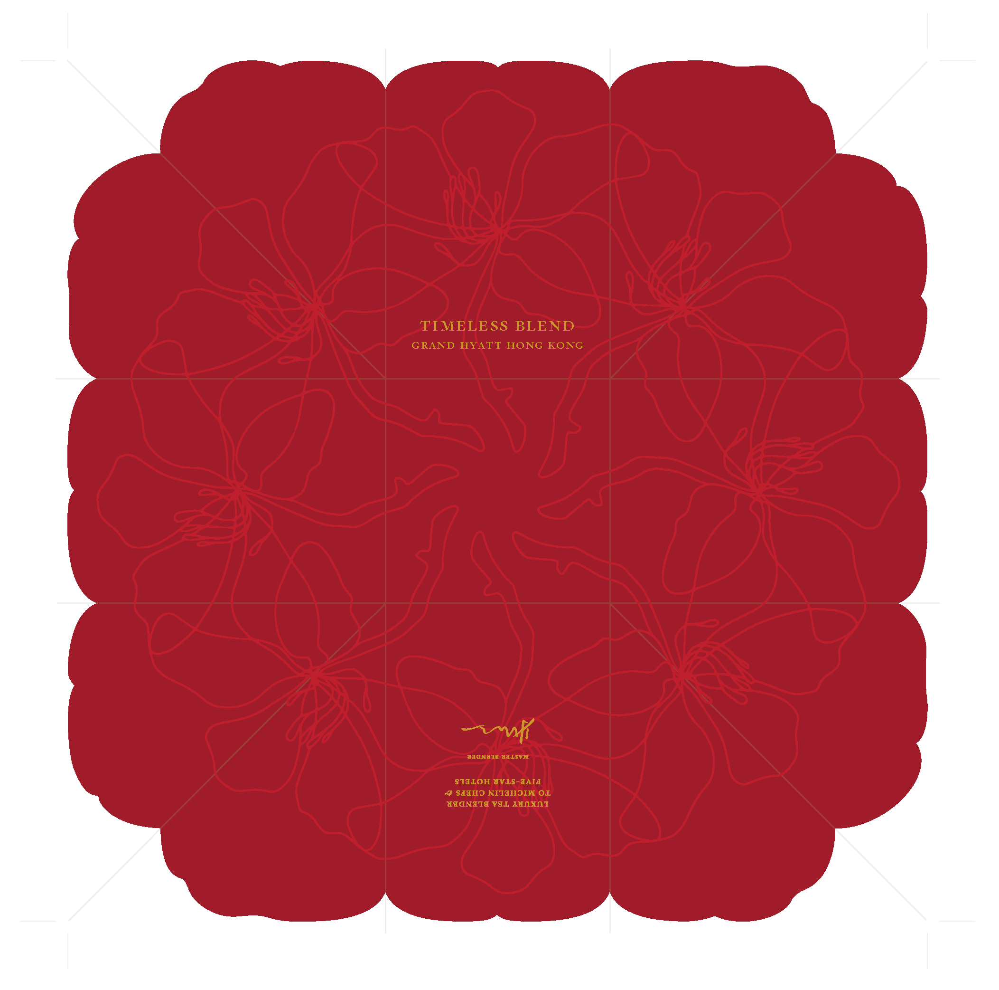
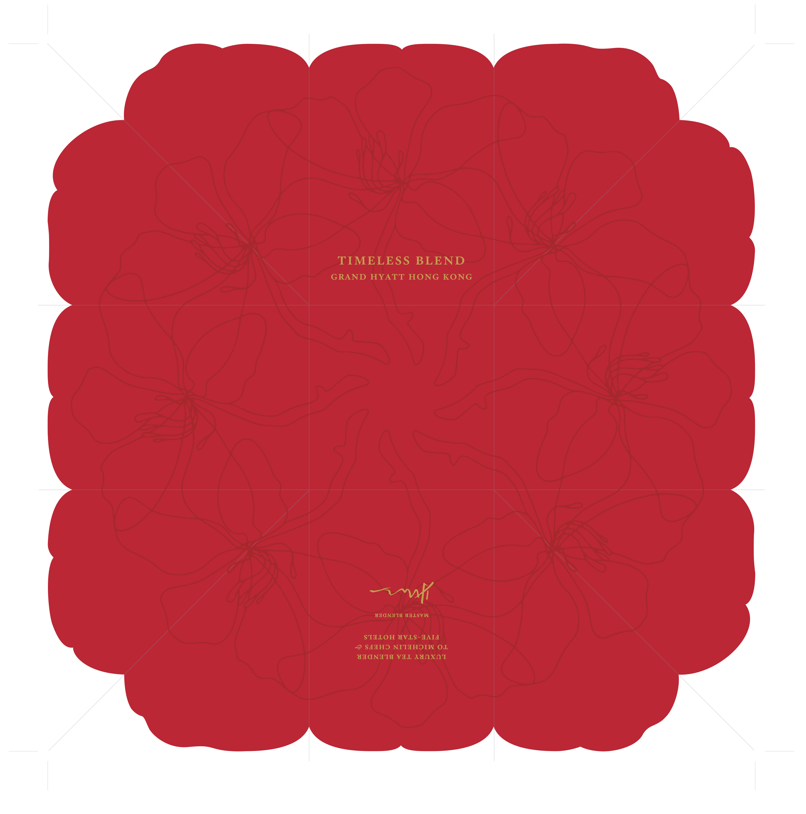
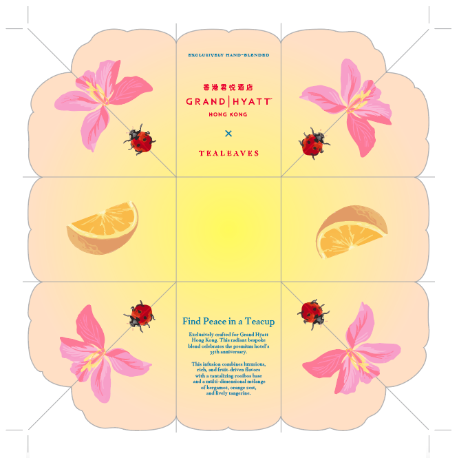
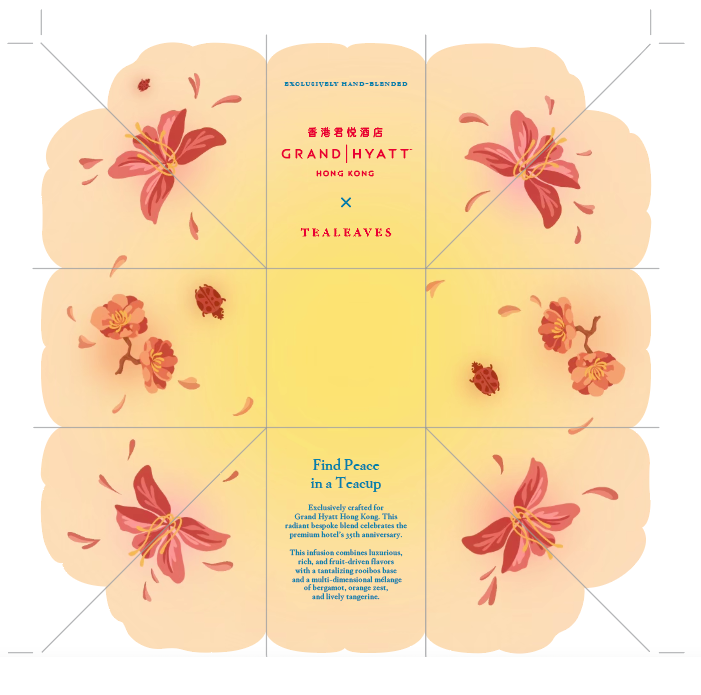
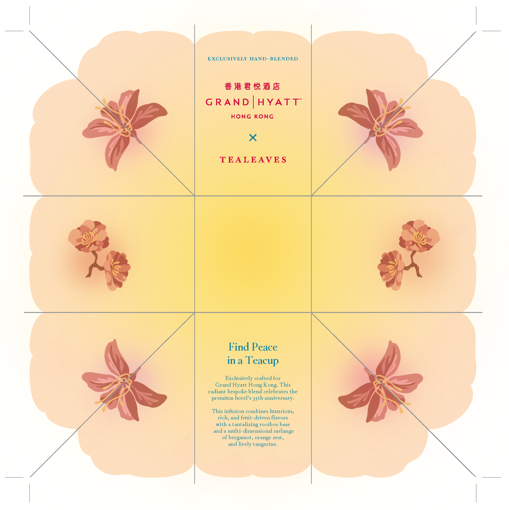
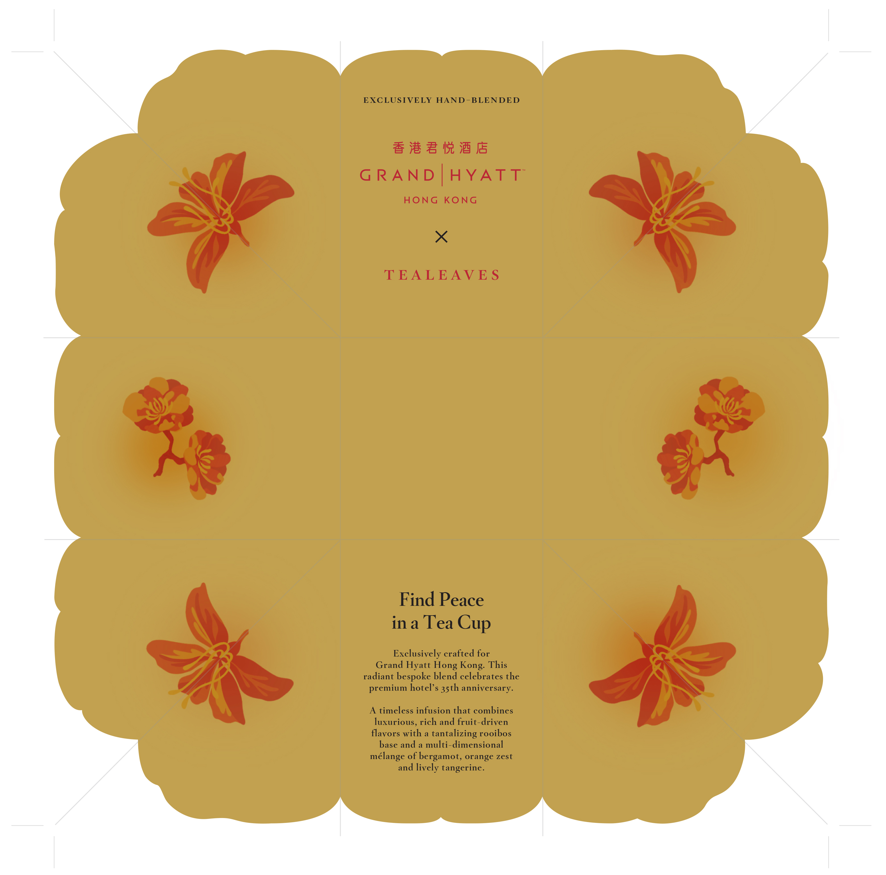

Grand Hyatt HK Origami Fold
Graphic Design
Packaging design that honors the Grand Hyatt Hong Kong's 35-year legacy while appealing to modern gift-givers seeking meaningful, culturally-resonant presents.
Role
Creative Designer
Illustrator
Tools
Procreate
Illustrator
Timeline
June 2024
Team
Creative Director
2 Designers
Overview
As a creative designer at TEALEAVES, I designed commemorative packaging for Grand Hyatt Hong Kong's 35th anniversary. The work was informed by research into TEALEAVES' brand language, Grand Hyatt's heritage, and Hong Kong's cultural aesthetics to ensure a cohesive and meaningful gifting experience.
Research
Understanding the Clients
Through discussion with the client, the goal of the product became clear, and extra research was necessary to discover which visual elements could best represent the brand for the occasion.
TEALEAVES Brand Language
"...every cup is hand-crafted by our master blenders, embracing ancient traditions and deep-rooted cultural rituals spanning millennia."
-- TEALEAVES Website
Grand Hyatt Hong Kong Heritage
Established in 1989, Grand Hyatt Hong Kong has a longstanding reputation for luxury hospitality. The brand is synonymous with elegance, exceptional service, and a commitment to providing memorable experiences for its guests.
Hong Kong Cultural Aesthetics
Hong Kong's rich cultural heritage is reflected in its art, architecture, and traditions. Key elements include the use of vibrant colors, intricate patterns, and symbolic imagery.
Tea Flavour Profile
Vanilla rooibos, bergamot, orange zest, tangerine.
Clients Needs
Packaging that feels special and giftable, clear brand association with luxury hotel, cultural authenticity.
Hong Kong Iconography
Bauhinia flower (official symbol), skyline, traditional junk boats, umbrella.
Colour Palettes
Grand Hyatt brand colours were utilized as the base palette.
Primary colours:
#BA0C2F
#54565A
Accent colours:
#007298
#6A963B
#B7AB96
#202945
#294634
#503629
A colour palette was requested by the client, due to their positive associations with prosperity and good fortune.
Yellow
Neutrality
& Good Luck
Orange
Neutrality
& Good Luck
Emerald
Health & Prosperity
Red Vermillion
Good Fortune
& Joy
Crimson
Good Fortune
& Joy
This understanding of the clients objectives led to the following initial sketches.
Bauhinia flower
Significance
This flora from the Hong Kong orchid tree serves as a symbol of identity for Hong Kong, representing identity, spirit, and beauty. It is also a national emblem, with this five petal flower being featured on the regions flag and coins.
Design
The gestural flowers are organized into a circular rhythmic pattern to reference the cycle of growth, made of an even 8 flowers (the client requested to consider the number "8" while formatting, considering its symbolic meaning of balance, prosperity, and new beginnings).
This visual was drawn in Procreate.
Orange Slice
The specialty tea for this blend contains notes of bergamot, orange zest, tangerine.
Ladybug
There is a belief that the sighting of a ladybug foreshadows a bout of good luck, and can represent new beginnings, and so my initial ideas included ladybugs so that anyone who opens this product would gain that "bout of good luck".
Bauhinia flower
Visualized in an alternate style, with more detail.
These are vector images created in Illustrator
Design Process
Organizing the pieces into cohesive external and internal designs
Throughout this design process I continuously seeked input and critique from both designers within TEALEAVES and from the contact at Grand Hyatt.
This input pushed the design through multiple iterations (especially for the interior design).
The exterior design was positively received first time around (a very rare occurence!), so the second version consists of only a colour switch.
Exterior
The exterior design utilizes Grand Hyatts Hong Kong's signature red, with a crimson to allow the orchid pattern to be a faint surprise against its background.
Version 1 ↓
Version 2 ↓
Interior
The interior became more simplified as the versions progressed. Initial design included orange slices (to compliment the teas orange zest and tangerine flavours) and ladybugs (to symbolize good luck), however both were removed in the final design.
Version 1 ↓
Version 2 ↓
Version 3 ↓
Version 4 ↓
Final Designs
Cohesive exterior and interior designs that honor the clients' needs
Simplified colour palette and illustrations for a more luxury feel. Illustrations that started off playful became more refined, and the large colour palette was narrowed down to two key colours, red and gold. This created a warm and elegant aesthetic.